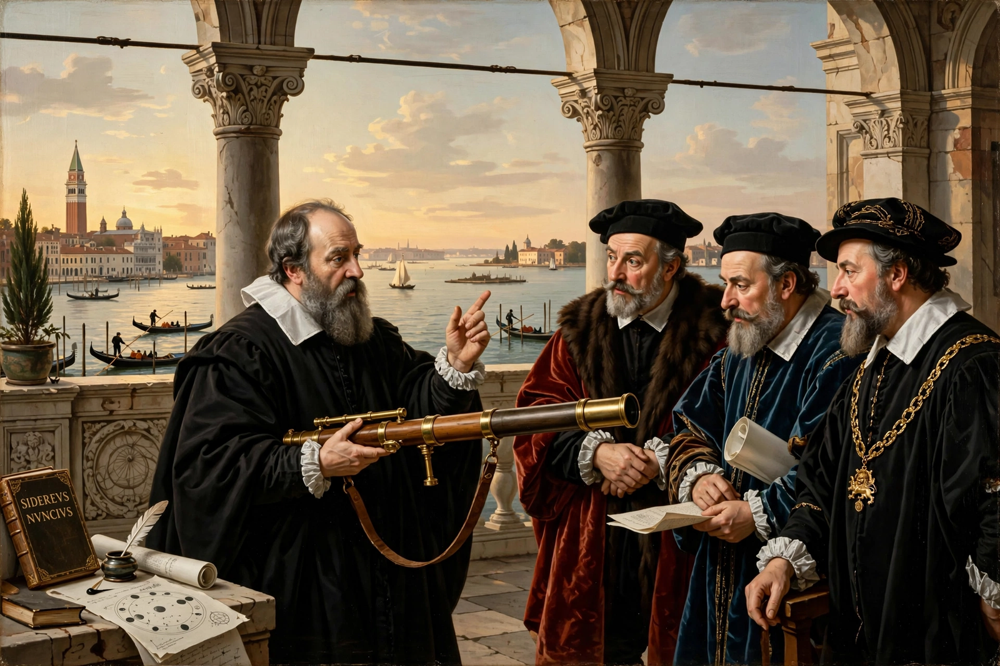

From Wikipedia, the free encyclopedia
| Galileo Galilei | |
|---|---|
| Born | 15 February 1564, Pisa, Italy |
| Died | 8 January 1642, Arcetri, Italy |
| Known for | Telescopic astronomy, kinematics, scientific method |

Galileo Galilei (1564–1642) was an Italian astronomer, physicist and engineer, a central figure of the Scientific Revolution. With an improved telescope he discovered Jupiter's four largest moons, the phases of Venus, sunspots and the Moon's rough surface — evidence that undermined the Earth-centred cosmos.
Galileo's advocacy of Copernican heliocentrism brought him before the Roman Inquisition; in 1633 he was forced to recant and spent his last years under house arrest, writing his finest work on motion. His mathematical treatment of experiment — inclined planes, falling bodies, pendulums — founded modern physics, the discipline of heat and force studies alike.